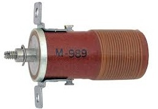
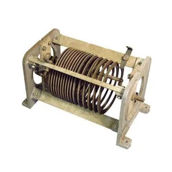
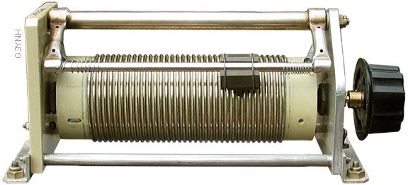
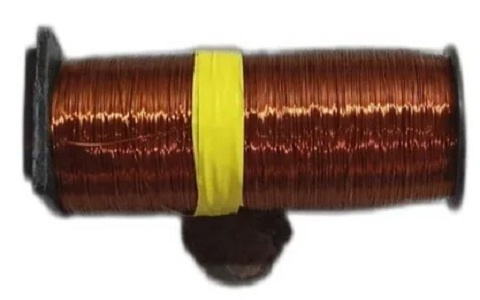
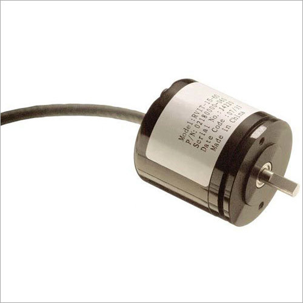

Welcome to ElectroSpecs | Explore Electronics Components | Learn & Build 🚀

SLUG-TUNED VARIABLE INDUCTOR

AIR-CORE VARIABLE INDUCTOR

FERRITE-CORE VARIABLE INDUCTOR

TAPPED VARIABLE INDUCTOR

ROTARY VARIABLE INDUCTOR